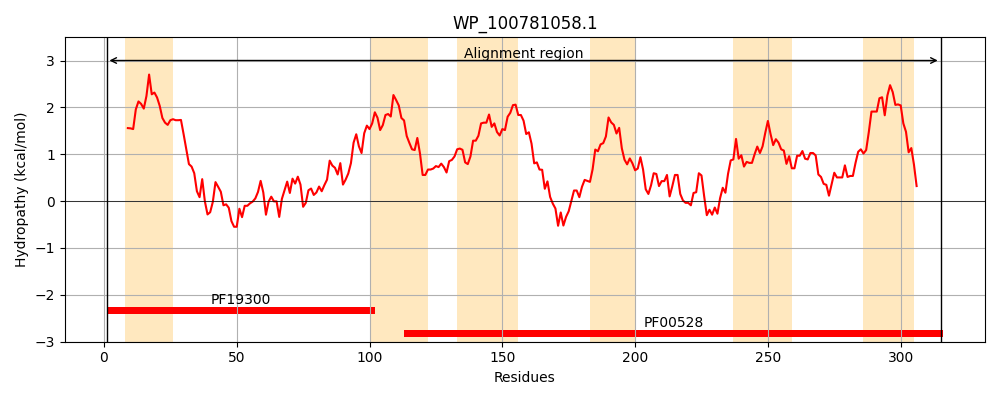
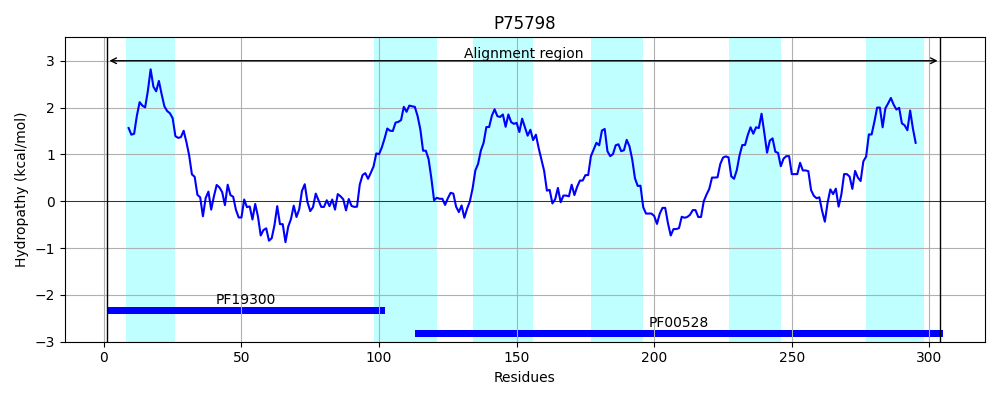
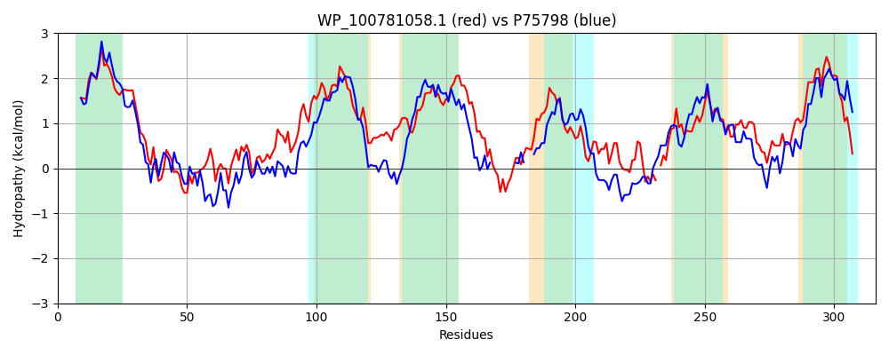

Hit Accession: P75798
Hit TCID: 3.A.1.5.11
Hit Description: gnl|BL_ORD_ID|11411 gnl|TC-DB|P75798|3.A.1.5.11 Inner membrane ABC transporter permease protein yliC - Escherichia coli.
Mach Len: 316
e:0.000000
Query TMS Count : 6
Hit TMS Count: 6
TMS-Overlap Score: 5.050000
Predicted Substrates:CHEBI:5437;glutathione
BLAST Alignment:
Score: 542 , Bit scores: 213 bits, E-value: 1.3e-67, Alignment length: 316, Percentage identity: 36
Query: 1 MINTLLYRILLAIPTMLGVAVICFMLVQIAPGDPLVSVMPPDASEALRQTLIQAYGFDKPLPLQFIHWLWRALHGDLGMSVATGRPVIDEVMTAVAYSLRLALLATAIGFVLGSLFGFVAGYFRNSVIDRLASVLSVFGVSVPHYWLGMLLVILCSVKFALLPATGGGPIGEVGWQWDWAHLQFMLLPALTLSVIPTGIIARTVRSQVADILSQEFIVGLRARGLNESRIFV-HVMKNAAPTALAVMGLQVGYLMGGSILVETVFSWPGTGLLLNTAIFQRDLPLLQGTIWVLALFFVLLNLLVDILQTTLDPRIK 315
M+N ++ R+L IPT+ V+V+ F+ V + PGDP + P+A + + + Q G D+PL QF H++ A+ GD G+S+ + RPV DE+ + +L L + + + G G +A +RN DRL+ ++V G+S P + LGMLL+ + SV+ LP G W H +LP+LTL ++AR R+ D+LS++++ RA+G++E+ + + H ++NA + +MGLQ G+L+GGSI+VE VF+WPG G LL ++ RD P++Q I + +L F+L+NL+VD+L ++P I+
Sbjct: 1 MLNYVIKRLLGLIPTLFIVSVLVFLFVHMLPGDPARLIAGPEADAQVIELVRQQLGLDQPLYHQFWHYISNAVQGDFGLSMVSRRPVADEIASRFMPTLWLTITSMVWAVIFGMAAGIIAAVWRNRWPDRLSMTIAVSGISFPAFALGMLLIQVFSVELGWLPTVGAD---------SWQH---YILPSLTLGAAVAAVMARFTRASFVDVLSEDYMRTARAKGVSETWVVLKHGLRNAMIPVVTMMGLQFGFLLGGSIVVEKVFNWPGLGRLLVDSVEMRDYPVIQAEILLFSLEFILINLVVDVLYAAINPAIR 304 | Protein Hydropathy Plots: |
|---|
|  |  |
Pairwise Alignment-Hydropathy Plot:
|
|---|
|  |